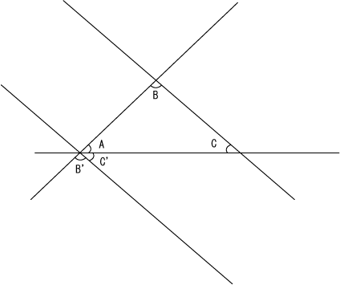
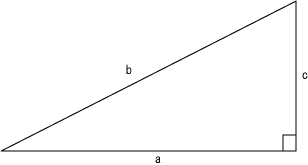
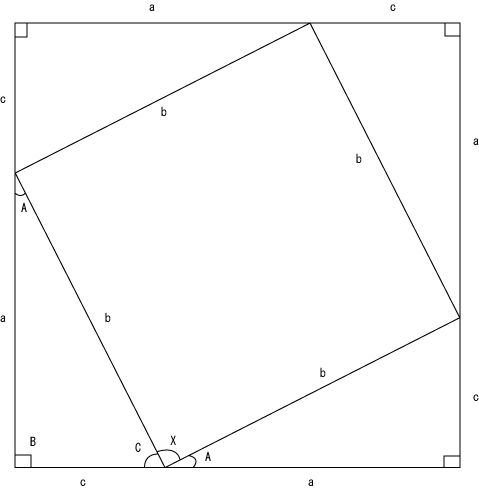
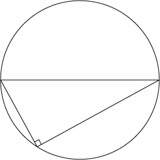
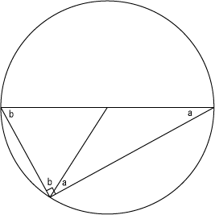
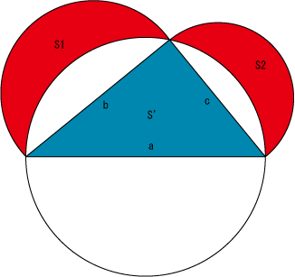
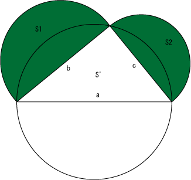
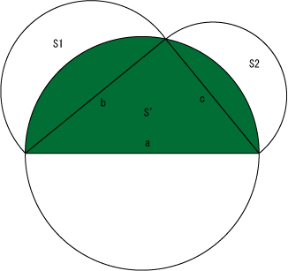

幾何学の世界観です。
数学・物理の分かる父親に教えてもらった数学的な考え方について。
数学的な考え方を始める前に、いくらかの定義を決めなければならない。
自然数とは、1をはじめとして、1ずつ増えていく数のことである。1, 2, 3, 4, 5, ...のように無限に増え続ける。n=n+1を永遠に続けるプログラムだと言える。
整数とは、自然数に加えて、0と負の整数を加えたものである。負の整数とは、-1, -2, -3, -4, -5, ...のように無限に1ずつ減り続ける数のことである。
点とは、空間における座標であり、2次元空間では座標は(x, y)のように2つの基準点、3次元空間では(x, y, z)のように3つの基準点で表され、それぞれの座標の方向は直角に交わる。
直線とは、2つの点を結ぶ最短の距離を持つ直線である。
長さとは、直線の距離をとったものである。
角度とは、二つの直線が交わった時に、そこに出来る角の大きさである。
円とは、1つの中心点から同じ距離の点を取った集合である。
公理とは、「自明の理」とも言うように、「証明をしなくても、定義から当たり前に言える正しいこと」である。
たとえば、「4は3より大きい」とか、「円の半径は中心点と各点の間の距離と等しい」などということが公理に当たる。
公理はたくさんある。この公理を上手く使うことで、数学では定理の証明を行う。
命題とは、「数学的な問題」のことである。基本的に「まだ正しいか間違っているか分からないもの」のことを言う。
たとえば、「三角形の内角の和は180°である」といったことがこれに当たる。
注意すべきなのは、正しいとされたものだけが命題ではないということである。たとえば、「三角形の内角の和は190°である」といった数学的に間違っているものも、同様に命題である。
証明とは、「命題が正しいのか間違っているのかを実証すること」である。
たとえば、先の「三角形の内角の和は180°である」といった命題は、以下のように証明できる。
三角形ABCがあった時、角Bと角Cを通る直線BCを角Aのところまで平行移動させる。以下の図のように、この時新しく出来た角をC', B'と呼ぶ。

この時、平行な直線と角の公理（自明の理）から、B'=B, C'=Cである。よって、A+B+C=180°である。
このように、数学の証明では、証明する必要のない公理から、命題を証明する。
（この証明は自分で行いました。）
このように、命題が真であるか否であるか証明された時、真である場合それを「定理」と呼ぶ。
一度証明した定理は、もう一度証明する必要なしに、数学的推論の中で何度でも使うことができる。
有名な定理には、ピタゴラスの定理（直角三角形ABCがあった時、A2=B2+C2となる）などがある。
ピタゴラスの定理は、次のような直角三角形があった時、b2=a2+c2になる、というものである。

これを証明するためにどうすれば良いか。
まず、以下のような、この同じ直角三角形を四つ並べて中心に四角形を形作る図を考える。

この時、角Xが直角になるかがポイントである。角A+角C+90°=180°になるため、角Xは90°になる。
そして、ここから、「大きな四角形の面積\((a+c)^2\)から4つのそれぞれの直角三角形の面積\(4 \times \frac{ac}{2}\)を引くと、小さな四角形\(b^2\)になる」ということが言える。つまり、
\[ (a+c)^2 - 4 \times \frac{ac}{2}=b^2 \]
が言える。これを解くと、
\[ a^2+2ac+c^2-2ac=b^2 \]
となる。よって、
\[ a^2+c^2=b^2 \]
である。よってこの命題は正しい。こうした推論をしていくことを、「数学的な証明」と言う。この証明された命題は定理となり、再度証明しなくても使うことができる。
（この証明は、厳密には自分で証明したわけではなく、父親に教えてもらいました。）
このように、数学は定義と公理から命題を証明して定理を導き出す。一見、誰にも出来ない不可能な仕事に見えるが、さまざまな定理と証明を知っていれば、あとは公式を覚えるだけで解ける。高校数学がやりたいのであれば、たくさんの公式を覚えることと、証明をどのように導きだしたら良いか、という「コツ」を覚えれば、簡単に証明できる。
タレスの定理とは、円の直径からどこでも良いから円周上の1点に点を取って三角形を作った時、その円周角は必ず直角になる、というものである。

これは、円周角に対して円の中心から以下のように線を引くことで証明できる。

円の半径は同じ長さになるため、ここに出来た二つの二等辺三角形の角は同じになる（a=a, b=b）。三角形の内角の和は180°になるため、2a+2b=180°。よって、a+b=90°である。
以上の証明は父親に教えてもらいながら自分で証明した。
以下は自分で証明したヒポクラテスの定理。
ヒポクラテスの定理とは、以下の図のように、タレスの定理で求めたような円の直径aから円周上の1つの点を繋いだ直角三角形（S'、青色の面積）が、その円周上の点から生まれた線分bと線分cをそれぞれ直径とする2つの円の内側の半円の部分を消した面積（S1とS2、赤色の部分）の和に等しい、というものである。

日本語で書くと分かり辛いが、要するにS'=S1+S2である、という定理である。
これは、以下の2つの面積が簡単に求められることから、証明できる。


また、タレスの定理により、内側にある三角形は直角三角形であり、
\[S'=\frac{bc}{2}\]
であることが分かっている。
円周角の定理（タレスの定理）により、
\[S'=\frac{bc}{2}\]
そして、
\[ \begin{eqnarray} S1+S2&=&\frac{b^2}{4}\pi+\frac{c^2}{4}\pi-(\frac{a^2}{4}\pi-S')\\ &=&S'+\frac{b^2+c^2-a^2}{4}\pi\\ \end{eqnarray} \]
ピタゴラスの定理により、
\[a^2=b^2+c^2\]
よって、
\[b^2+c^2-a^2=0\]
よって、
\[S'=S1+S2\]
自分は最初、上の着眼点をそのまま式にしてしまい、
\[\frac{bc}{2}=\frac{b^2\pi}{2\times2}+\frac{c^2\pi}{2\times2}-\frac{a^2\pi}{2\times2}+\frac{bc}{2}\]
となり、これを解いた結果、
\[b^2+c^2-a^2=0\]
となって、おかしく分からなくなりました。
父親は、「ヒポクラテスの定理の証明をしようとして、ピタゴラスの定理の証明をしてしまった」と言っていました。
父親は、「右辺と左辺にS'とS1+S2を入れれば解ける」と言っていました。それをピタゴラスの定理とともに直したのが上の式です。
ピタゴラスの定理は公式として良く使われます。父親は、「次はトレミーの定理」だと言っていました。
後日注記：トレミーの定理（プトレマイオスの定理）については、三角比を参照のこと。
2024.10.02編集
ユークリッド幾何学の証明の基本的な手法として、以下のようなものが挙げられる。
・多角形は三角形に分割すること
・補助線を引くこと
・直角三角形や二等辺三角形の公理を使うこと
・同じ角、同じ長さ、同じ比率を使うこと
・相似な図形は各辺の比率や角の大きさが同じであることを利用すること
・180°、90°（直角）、そして同じ大きさの角がどこに生まれるか、ということを利用すること
そして、別の既に証明されている定理を使うことで、証明がしやすくなる。以下のような定理を使うことが多い。
・三平方の定理を使うこと（直角三角形の斜辺の二乗は他の各辺の二乗の和に等しい）
・三角形の内角の和は180°である定理を使うこと
・タレスの定理（円の直径から円周上の1点を取った三角形は直角三角形になる）を使うこと
・三角形の外角の定理（三角形の2つの内角の和はもう一つの角の外角に等しい）を使うこと
・円周角の定理（円の円周上の二つの点から取った円の中心角は、その2つの点から取った円周上の点の円周角の二倍である）を使うこと
証明の基本は、簡単に計算出来る着眼点を持ち、また同じ値には名前をつけること、上手く式の移項などの代数的操作を行うことで、道筋を立てて数を計算していくこと、などである。
そして、どのようにすればその値をその値にできるか、ということを上手く考えながら代数を使うこと。何も考えず、ただ式にしても、上の僕の反省点のように、望みの証明が出来ない場合がある。
三角形の外角の定理や円周角の定理（中心角が円周角の二倍になる）は、簡単に証明できるので、証明の練習におすすめである。僕も父親と一緒に頑張って証明した。
（数学の思想 (NHKブックス 42)を参考に執筆しました。）
非ユークリッド幾何とは、曲面における幾何学のこと。
今までのユークリッド幾何学は、平面における幾何学を行ってきた。
ユークリッド幾何学の問題は、平行線の公理が複雑であったこと。平行線の公理とは「直線lの上にない点Pを通って、lに平行な線をただひとつ引くことができる」という公理だが、実際の原論ではこのように単純な説明ではなく、これだけが特別複雑で、「公理ではなく定理では」と言えるようなものだった。
これは長い間数学者にとって「ユークリッド幾何学に対する疑惑」と言えるものだった。
これについて、イタリアの僧侶のサッケリという人物が、鈍角仮定・直角仮定・鋭角仮定という三つの仮定から、平行・垂直な線分における直角の大きさの関係性について、重要な発想をしていたことが後になって分かった。
近年では、非ユークリッド幾何学という、新しく打ち立てられた幾何学が二つある。ひとつは、ロバチェフスキーとボーヤイによる双曲的幾何学（双曲幾何）、もうひとつがリーマンによる楕円的幾何学（曲面の幾何）である。双曲的幾何学では、平行線は無数に存在し、サッケリの鋭角仮定に対応する。楕円的幾何学では、平行線はひとつも存在せず、サッケリの鈍角仮定に対応する。これらに対して従来のユークリッド幾何学は放物的幾何学と呼ばれる。放物的幾何学では、平行線は一本しか存在せず、サッケリの直角仮定に対応する。
そして、双曲幾何に比べてより一般的なリーマンの非ユークリッド幾何学では、球体の上半分を平面として仮定して幾何学を行う。何も知らない僕が思うに、これは球体という名前の「新しい次元」ではないかと思う。三次元空間であったユークリッド幾何学を改め、新しい「球体の平面・回転という軸」を付け足したものであると考えられるからである。
僕は、ユークリッド幾何学以外の、まったく別の考え方をもって成立するような、幾何学、すなわち図形の学問の可能性があると思う。
これは、平面ではなく曲面における幾何学を対象とする、大学の非ユークリッド幾何学のことを指しているわけではない。
ユークリッド幾何学とは、そもそもユークリッドによる「原論」から始まった図形の科学であり、いくらかの自明の公理から出発し、そこから定義をし、すべての定理と証明を行う、という形で、定義と証明による図形の法則を「数学的正しさ」の上から解明して、法則化していく。
このような幾何学的な手法は、やがてデカルトの算術と幾何学の融和（解析幾何学）などが相まって、数学全般においても、「公理から出発して定義と証明から定理を作る」というスタイルの数学を、世間で一般的にした。
だが、少し疑問に思うのは、「なぜ定理を証明しなければならないのか」ということである。
定理と証明が一般的な数学であり、そこに確かな法則性の解明という論理性があるのは分かるが、ほかのスタイルでの数学は考えられないのだろうか。
幾何学を公理主義的だと言うのであれば、算術はむしろ、正解である値それ自体、すなわち「真理がひとつに定まる」という特徴を持っている。
どんな数式であっても、必ずその答えはひとつであり、答えがたくさんあってどれでも構わないという「曖昧さ」がなく、また数学の規則そのものにすべての説明が含まれているため、「追加的な説明が一切必要でない」ということが、算術としての数学の基本である。
だが、ここでも疑問に思うのは、「なぜ答えをひとつに定める必要があるのか」ということである。
つまるところ、僕が言いたいのは、「関数的真理でも公理主義でもない、新しい数学（やそれに属する幾何学）」は考えられないのか、ということである。
幾何学がもしあったとして、必ずしも幾何学が公理主義である必要はあるだろうか。定理や証明以外の方法で、図形を捉えることはできないだろうか。それを、ユークリッド幾何学ではない、「原論」的でもない、新しい幾何学とみなせないだろうか。
同時に、算術的な数学があったとして、必ずしも真理がひとつに定まる必要はあるだろうか。関数や方程式以外の方法で、数式を捉えることはできないだろうか。
たとえば、一対一対応の関係だけではなく、さまざまな数の関係するシステムを考えられないだろうか。さまざまな答えを候補に挙げて、曖昧であっても正しさよりも妥当性のある選択肢の範囲を示すような、そのような数学は考えられるはずである。
そのように考えてみると、まだまだ人類の作り上げてきた数学や科学は、いくらでも別のものを考えられる余地があるのだということを、僕は思うのである。
幾何学において、興味深い「曲線」の対象は、円や円弧以外にもある。
放物線、双曲線、そして楕円は、円錐を切断した時に生まれる曲線であり、円錐を切断する角度によって、円になったり放物線になったり双曲線になったり楕円になったりする。
古代ギリシャ出身のアレクサンドリアの数学者アポロニオスは、この「円錐曲線」において重要な功績を残した。
これが17世紀の解析幾何学により、二次元座標のグラフ上における二次関数として新しく定義されるようになった。
（ザ・ストーリー 数学大図鑑を参考に執筆しました。）
2023.02.23-24
関数のグラフには、\(y=f(x)\)となる「陽関数」と、xとyが複雑に関係し、特定の変数として解かれた関数ではない「陰関数」の二種類がある。
陽関数の例は、
| グラフ | 関数 |
|---|---|
| 直線（比例） | \[y=ax+b\] |
| 直角双曲線（反比例） | \[y=\frac{k}{x}\] |
| 放物線（二次関数） | \[y=ax^2+bx+c\] |
陰関数の例は、
| グラフ | 関数 |
|---|---|
| 円 | \[x^2+y^2=r^2\] |
| 楕円 | \[\frac{x^2}{a^2}+\frac{y^2}{b^2}=1\] |
| 正方形 | \[|x|+|y|=1\] |
（オイラーの贈物を参考に執筆・引用しました。）
初等数学も参照のこと。
2024.02.21
数学史も参照のこと。
三角比も参照のこと。
透視図法（射影幾何学）についてはパース・遠近法・透視図法も参照のこと。